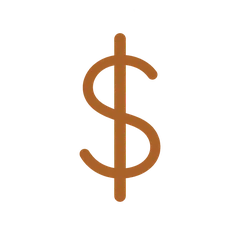

Hello, I’m
I share simple wellness tips, healthy habits, and real-life support to help you feel your best, without hype or pressure.
See my wellness resourcesI started paying more attention to my own wellness because I wanted simple, realistic ways to feel better and stay consistent. Along the way, I’ve learned that small daily choices really can add up.
Now I enjoy sharing what I’m learning, the wellness products and resources I personally use, and practical ideas that can fit into everyday life. My goal is to share helpful information and options without hype or pressure.
Let’s Connect
Business OpportunityCurious about earning by sharing?If you’re curious about earning by sharing products you believe in, I’d be happy to tell you more about what I do and how it works. No pressure, just information so you can decide if it might be a fit for you.
Tell me moreI love being able to share something I believe in while building an extra stream of income from home. It’s flexible, simple to learn, and something I can work around real life. If you’re curious about what I do, I’m happy to share the details and let you decide if it could be a fit for you.
Learn more